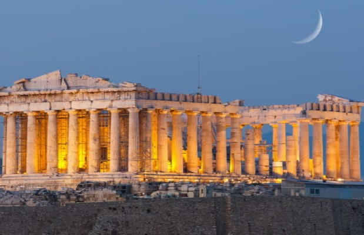
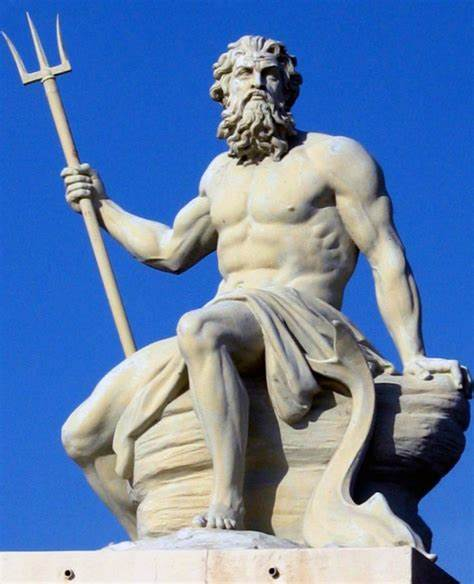

¿Cual es la cultura griega?
La cultura de la Antigua Grecia, también conocida como la Grecia Antigua o la Grecia Clásica, es la llamada cuna de la Civilización Occidental: fue una de las culturas de mayor influencia e importancia en la antigüedad mediterránea. Su centro se hallaba la antigua ciudad-Estado de Atenas. Gran parte de esta cultura sobrevive hoy en día. De hecho, ha influido fuertemente numerosos aspectos de la cultura occidental: el imaginario, la política, la lengua, las artes, la filosofía, las ciencias y los sistemas educativos. Su importancia actual se debe no sólo a la riqueza de pensamiento y a la naturaleza expansionista de los griegos, sino también a su posterior conquista y asimilación por el Imperio Romano en el siglo II a. C. Cualquiera que haya tenido un acercamiento a la vasta mitología griega o a los pensadores fundamentales que llegaron a la humanidad, como Sócrates, Platón y Aristóteles, entre muchísimos más, puede hacerse una idea de la importancia de esta civilización antigua. Esta cultura estuvo prácticamente prohibida y silenciada durante los 1500 años de medioevo cristiano, tildada de pagana. Sin embargo, mucho de ella sobrevivió en el Imperio Bizantino (o Imperio Romano de Oriente), hasta su caída frente a los Otomanos. De hecho, su reaparición en Occidente ocurrió durante el Renacimiento europeo de los siglos XV y XVI.
POSEIDON: El dios del agua 
Poseidón era el dios griego del mar y de los ríos, el creador de tormentas e inundaciones, y el portador de terremotos y destrucción. Fue quizás el más perturbador de todos los dioses antiguos, pero no siempre fue una fuerza negativa. Era un protector de los marineros, y como domador de caballos, el patrón de esa cría de animales y caballos. Para los romanos, era conocido como Neptuno,En la mitología griega posterior, Poseidón era el hijo de Cronos y Rea, y el hermano de Zeus y Hades. Fue una figura clave en las batallas por el control del universo entre los Titanes, los Gigantes y los Olímpicos. En su victoria, los tres hermanos hicieron un sorteo para decidir sobre qué dominio reinarán, y Poseidón ganó los mares. El dios moraba en magníficas mansiones doradas bajo el mar, bellamente adornadas con coral y flores marinas. Tradicionalmente, este palacio submarino, que incluía los establos del dios de caballos blancos finos, se encontraba cerca de Egas en Eubea. Aparentemente no contento solo con los mares, Poseidón a menudo interfiere en los planes de Zeus, y una vez incluso intentó derrocar a su hermano con la ayuda de Hera y Atenea. Fue como castigo por esta traición que Poseidón fue hecho para construir los magníficos muros de Troya. La esposa de Poseidón era la nereida Anfitrita, El hijo más famoso del dios con Anfitrite era Tritón, que era mitad hombre, mitad pez. Otros dos niños eran Rodo y Bentesicime. Sin embargo, como con las otras divinidades, Poseidón engendró muchos otros hijos con varias parejas. Los más notables son Teseo (con Etra), Polifemo el Cíclope (a quien Odiseo se encontró en su largo regreso de la Guerra de Troya), Orión el cazador (con la hija de Minos), el caballo volador Pegaso (después de la violación de Medusa), el caballo salvaje Arión y Caribdis (con Gaia), el monstruo marino devorador de barcos que creó terribles remolinos. Quizás justificadamente celoso de todos estos asuntos, el enamoramiento de Poseidón con Escila, la hija del dios del mar Forcis, llevó a Anfitrite a echar algunas hierbas mágicas en el baño de la niña que la convirtió en un monstruo furioso con doce pies y seis cabezas. Tanto Escila como Caribdis amenazaron a los marineros que pasaban el estrecho de Messina entre Sicilia e Italia continental. Poseidón era responsable de otra criatura terrible: el Minotauro. El fracaso de Minos en sacrificar el toro como un regalo para él dios dio lugar a que Poseidón hechizara a la esposa de Minos, Pasífae, y se enamorara del toro; y el fruto de su relación amorosa era la criatura mitad hombre, mitad toro que habitó el laberinto de Cnosos.
Aqui hay mas informacion sobre Poseidon.
EL GRAN POSEIDON